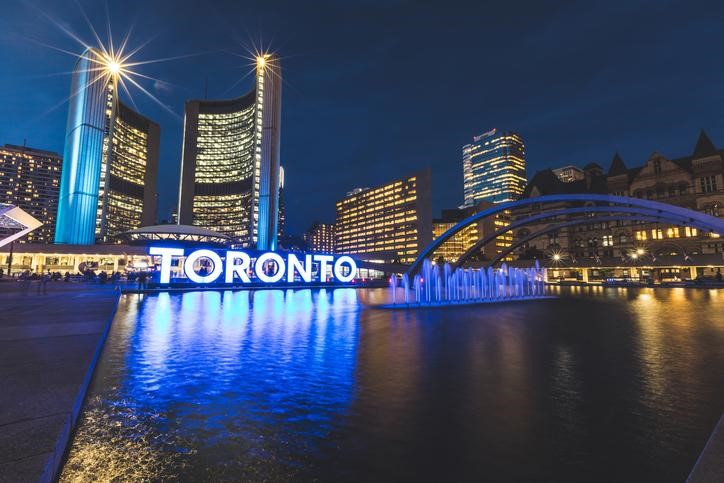

Sobre Toronto
Fundada em 1824, a cidade de Toronto respira diversidade e é considerada uma das capitais mais multiculturais do mundo. São cerca de 140 idiomas espalhados em seus arredores e mais de 2,8 milhões de habitantes na região que é a capital da província de Ontário e que está localizada às margens do Lago que ganhou o mesmo nome, Ontário.

Bairros de Toronto, o mundo em um só lugar
Essa é a terra das comunidades estrangeiras, e isso fica evidente ao caminhar pelos bairros de Toronto. Alguns distritos trazem à tona características marcantes de diferentes nações, como Little Italy, por exemplo, que, como o próprio nome sugere, é formado pela forte influência italiana. Esse local está repleto de bares e restaurantes que destacam a maravilhosa culinária do país europeu. E é nesse distrito que fica localizado o Italian Walk of Fame, a calçada da fama canadense que presta homenagens aos artistas italianos.
O Chinatown canadense é ainda mais emblemático, graças às suas características chinesas e à forte presença de descendentes asiáticos na região. O pequeno império chinês chama a atenção por sua diversidade e, também, pelo clima oriental. Além disso, grande parte dos moradores fala mandarim e cantonês.
Ainda há mais para conhecer em Toronto. Existe um curioso bairro com influência hindu, chamado de Little Indian, onde fica localizado o maior mercado de referência étnica sul-asiática da América do Norte: The Gerrard India Bazaar. Nesse espaço, é possível encontrar tecidos e sedas coloridas, muito utilizadas para fazer o tradicional sarri hindu, além de joias e acessórios para a composição de um visual característico da Índia.
A gastronomia do local é um atrativo à parte. Provar um dos pratos tradicionais é praticamente uma obrigação para quem decide visitar o bairro. Por isso, não deixe de apreciar um delicioso prato vegetariano ou mesmo o saboroso frango fresco Tandoori.
Volte para a Página Inicial